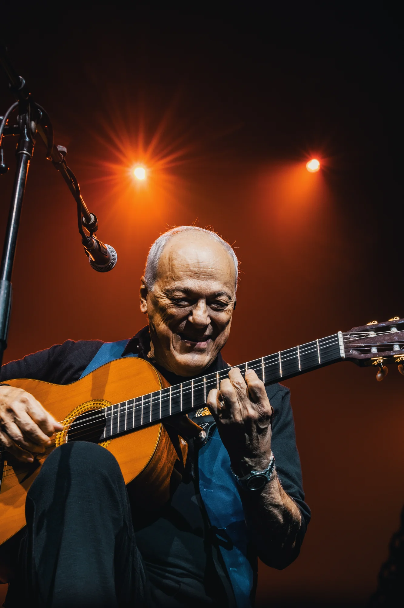
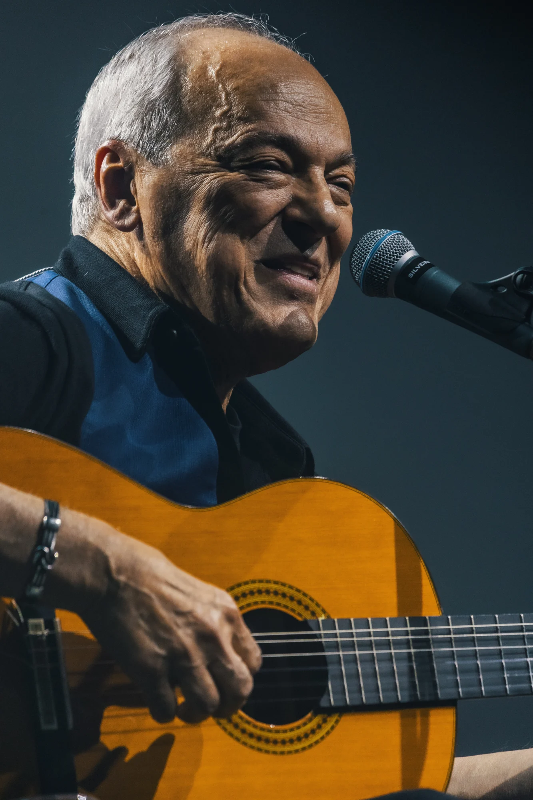
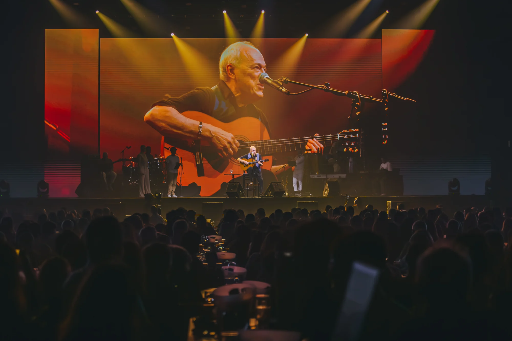
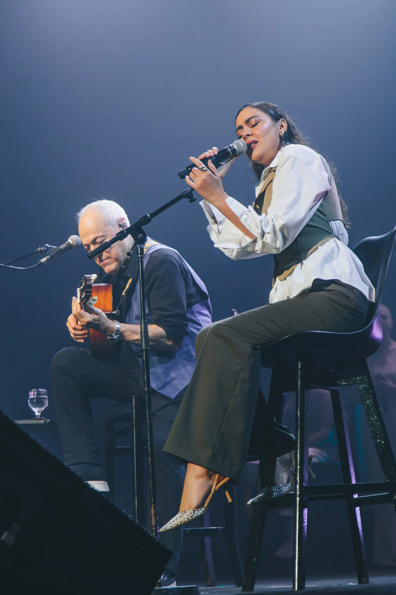
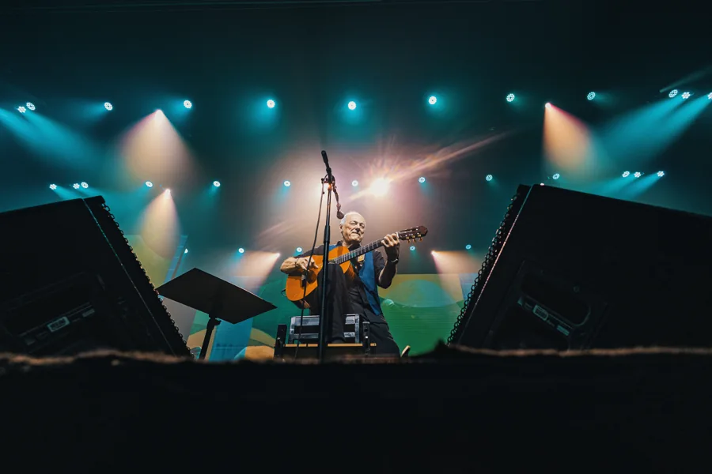
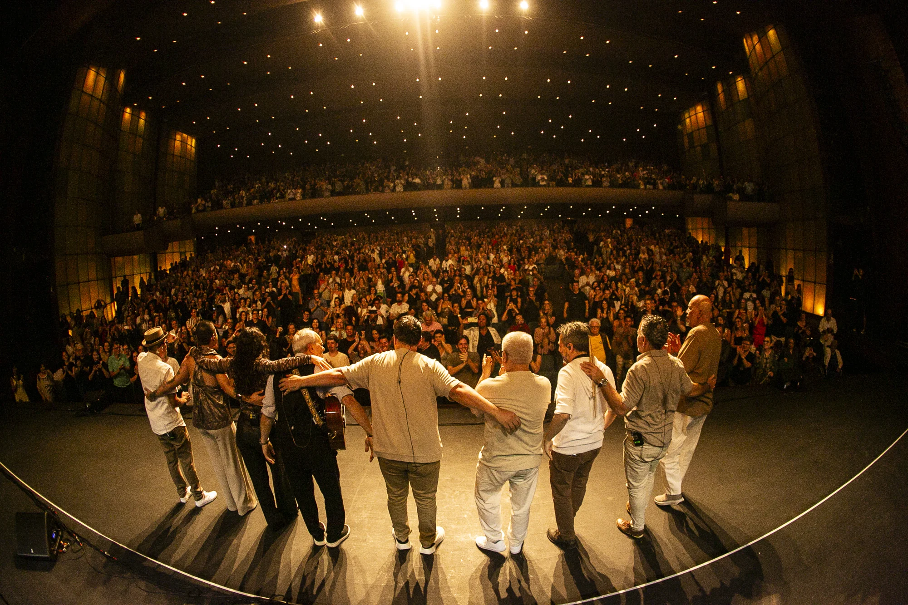

O começo de uma história.
Antonio Pecci Filho nasce em São Paulo, em 6 de julho. O menino do Bom Retiro se tornaria Toquinho.

Toquinho Uma celebração para 2027
Uma vida inteira de canções.
Um novo capítulo para viver junto.
A celebração
Oito décadas de vida. Canções que atravessam gerações. Encontros que fazem parte da nossa história.
Em 2027, a proposta é celebrar essa trajetória com quem sempre esteve presente: o público. Uma turnê para revisitar histórias, reencontrar grandes sucessos e compartilhar emoções.
Próxima, afetiva e intimista. Uma noite em que Toquinho convida cada pessoa a sentar mais uma vez ao seu lado, ouvir, cantar e celebrar.
A história é dele.
A emoção é de todos nós.
A trajetória
Do primeiro violão aos palcos do mundo.
Uma história que segue em movimento.
Antonio Pecci Filho nasce em São Paulo, em 6 de julho. O menino do Bom Retiro se tornaria Toquinho.
Com formação que passa por Paulinho Nogueira, Toquinho lança seu primeiro LP, o instrumental O violão de Toquinho.
Em Buenos Aires, começa a parceria com Vinicius de Moraes. Uma década de música e amizade que deixaria canções como Tarde em Itapuã na memória brasileira.
Aquarela ganha sua versão brasileira. No mesmo ano, Casa de Brinquedos aproxima ainda mais sua música do universo da infância.
Em 6 de julho, Toquinho completa 80 anos. Uma vida de encontros, composições e palcos que segue aberta a novos capítulos.

A experiência no palco
Um espetáculo pensado para aproximar.
Da primeira imagem ao último aplauso.

Uma vida em imagens
Encontros entre gerações
Quatro apresentações especiais propostas. Encontros únicos. Novas histórias.
Convidados de diferentes gerações ampliam o alcance da celebração e criam momentos singulares dentro da turnê.
Conexões previstas na proposta Vibra SP · 31.10.2026
Luísa Sonza & Tiago Iorc
Artistas para novas aproximações
Participações e colaborações sujeitas à definição artística e à aprovação da Level Up.
A turnê de celebração · 2027
Teatros e espaços culturais que preservam
a proximidade entre o artista e o público.
Espaços de aproximadamente
2.000 a 5.000 espectadores,
conforme o potencial de cada praça.
Para além dos palcos
Entrevistas, histórias e encontros para ampliar a presença de Toquinho ao longo de 2027. A proposta de comunicação contempla Fantástico, TV aberta e fechada, grandes jornais, rádio, podcasts e plataformas digitais.
Bastidores, registros do público e momentos especiais alimentam a comunicação da turnê e abrem caminho para um registro audiovisual comemorativo.
Uma celebração para viver.
Uma história para preservar.
Novos caminhos para uma história que continua
Uma história como essa
não cabe em um único projeto.
A turnê dos 80 anos é o ponto de partida. O Toquinho 360 propõe novos formatos e oportunidades para conectar essa trajetória a diferentes públicos e mercados.
Uma iniciativa entre Level Up e Seven, respeitando a essência artística e a gestão da carreira.
Um novo projeto para crianças, pais e avós, com identidade própria e potencial para espetáculos, festivais familiares, conteúdos e experiências.
Um novo label da marca Toquinho.
Referências de formato: Adriana Partimpim, Palavra Cantada e Pequeno Cidadão.

Ampliar a presença de Toquinho em festivais contemporâneos, criando encontros com novos artistas e aproximando sua obra de outros públicos.
Uma história que merece ser ouvida por novas gerações.
A Seven soma sua estrutura comercial e operacional à gestão da Level Up, atuando da prospecção à entrega dos projetos aprovados.
A Seven conecta sua expertise em marcas à trajetória de Toquinho para identificar relações legítimas com empresas e projetos.
Da prospecção à criação de campanhas, experiências, patrocínios e projetos especiais. Histórias que façam sentido para ambos.
A construção
Essência artística, gestão e realização.
Cada parte com o seu papel.
Essência, repertório e direção artística.
Gestão da carreira e aprovação de projetos, orçamentos, datas, parceiros e contratos.
Planejamento, desenvolvimento comercial, booking, gestão e execução dos projetos aprovados.
Marcas, produtores, fornecedores e agentes que ajudam a viabilizar cada iniciativa.
Uma proposta aberta, construída em conjunto, com as decisões estratégicas e comerciais validadas pela Level Up.

O próximo capítulo
Celebrar o que foi construído.
Compartilhar com quem sempre esteve presente.
Apresentar essa história a novas gerações.
E continuar escrevendo, juntos.
Baixar a proposta PDF · 5 páginas